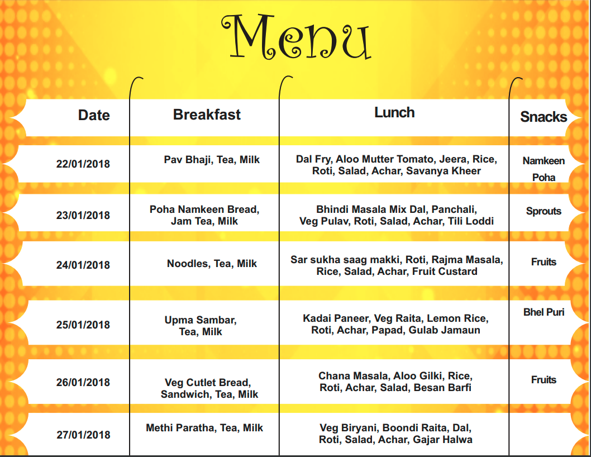

GVN - The Global School
Home
About Us
Academics
Facilities
Gallery
Arts
FACILITIES WE PROVIDE
Smart Class
Classrooms are spacious, centrally air conditioned and have lighting arrangements as per international standards. The number of students in each class is restricted, so that the teachers give individual attention to each student. Aesthetically designed furniture has been provided in each classroom, keeping in mind the comfort of the child. Each classroom of the Junior School has been tailor made to cater to the creative needs of the tiny tots.
The Presiding members in the Goenkan Classroom are the Interactive white boards used in SCHOOL as a replacement for traditional white boards or flipcharts. They provide ways to show students everything which can be presented on a computer’s desktop (educational software, websites and others) in an actual working setting.
In addition interactive whiteboards allow teachers to record their instructions and post the material for review by students at a later time. This is a very effective instructional strategy for students who are absent from school, for students struggling while learning, and for reviewing work during examinations.
1. Creative video files teach a software application, a lesson, or as a review to be posted to the server on the web.
2. Use the built in maps to teach continents, oceans, countries, or states and capitals.
3. Showcase presentations created by student or teacher.
4. Have students create e-folios including samples of their work and narration.
Digital storytelling.
5. Take notes directly into PowerPoint presentations.
6. Reinforce skills using on-line interactive web–sites.
7. Creating a project calendar.
8. Illustrate and write a book. Use the record feature to narrate the text.
9. Use the inter write software to create lessons in advance at home or at school. Then save them for future use or share with other teachers.
10. Diagramming activities.
Sports
With an aim to ensure every child, a holistic development, we takes pride in providing them, an promoting sports like Football, Volleyball, Basketball, Cricket, Lawn Tennis, Athletics, Skating, Horse Riding and Swimming. The school makes efforts to provide sports facilities of international standards, exclusively for thrill and excitement of Sports Competitions, thus enabling the students to learn teamwork, hardwork, passion, discipline obedience etc.
The accomplishment of this idea is reflected in our young sports stars who have excelled at the State & National level competitions year after year.
Computer Lab
In order to enhance language skills, right from the primary level, we have now introduced Words Worth Language Lab, catering to the much needed requirement of sharpening Spoken English Language Skills. The product caters to language enrichment requirements of students from class III to class X. The lab software enriches the Vocabulary, Pronunciation, Sentence formation (functional grammar) and Listening as well as comprehension skills. This product is based on research done by BBC in India and works at polishing the English language skills. The accent used is Indian (neutral). This product is graded into 8 levels to suit children of different age levels.
To develop foreign language skills, students learn several foreign languages using the natural way of acquiring language through LISTENING and SPEAKING. The lab provides a fun way to learn foreign language, wherein the students are engaged and entertained whilst at the same time enabling teachers to monitor the child’s progress rigorously.
Chemistry Lab
The School has a well equipped chemistry lab. All the apparatus, equipment etc required for the practical lesson of level 6 to 12 are present. In terms of equipment and chemicals the lab can be easily considered as equivalent to school lab.
Best safety equipments have been installed in the lab, which makes it the best in the region. It comes up as safe station to explore chemistry.
Physics Lab
Physics laboratory is one of the most well equipped lab . Practicals are carried out regularly so that children understand Physics better by doing themselves. Various models and charts are displayed in the lab to arise the curiosity of students
Time to time, as per need according to the changed syllabus, new apparatus is purchased and old one is disposed off to store keeper fur further action. The tables have inbuilt connections for electricity so that children have easy access to it for electricity experiments. The lab is fully safe against all kinds of accidents- fully ventilated, having full bright light and fire extinguishers. Even the switches are the most modern ones so that children don’t get any shock by just putting pencils or wires inside.
Bio Lab
The lab is located on the ground floor of the Senior school building. This lab caters to students of classes VI to XII.
The lab is fully equipped with latest instruments and apparatus meeting the CBSE standards. The lab is quite spacious. Demonstrations for various topics of Biology are done for the clarity of the concepts and which leads to the better understanding of the subject. This facilitates the preparation of project, which help and guide the students to keep abreast with the latest research and developments in this millennium.
Exciting practical sessions form a crucial part of learning Science.
Maths Lab
A well equipped maths lab provides students the opportunity to have fun with members. It helps students to put their mathematical abilities to test & enchase their observation skills & derive formulae thereby building interest & confidence in the students in teaching & doing mathematics
Sick Room
The first aid kit, fully equipped, kept handy for causalities, care in taken to provide students safety measures at school.
Infirmary (Medical Room)
The School houses a well-equipped air conditioned Medical Room accessible during school hours. Skilled professionals are in attendance to ensure that all emergencies are treated with utmost care and attention. are present in the school, keeping in readiness emergency medicines and medical apparatus. We also have tie-ups with reputed hospitals and clinics in the vicinity to address the emergency situations.
Students are mentored on the various aspects of diseases (Health Education), first aid, life style, diet management techniques and stress management (aided with Yoga & Meditation). The students are also oriented about the importance of developing immunity.
Dining Hall
The school serves vegetarian Indian, Chinese, South Indian & Continental cuisines. The menu has been designed by expert nutritionists and is cooked on the campus ensuring adherence to stringent quality checks.
We cater not only to the requirements of our students and staff but also for our esteemed parents and visitors. The canteen administration aligns itself with the events in the school and serves special refreshments on occasions like Independence Day & Parents Teacher Meetings. Special assemblies etc.
Transport
Transport
The SCHOOL, owns a fleet of buses. Each The buses carry a highly trained driver, conductor. Additionally our teachers accompany the children on all the bus routes.
The school operates different bus routes. The details of bus routes, pick-up and drop-off points, time schedules; and bus charges will be provided by the school at the time of admission of students.
Security & Surveillance
Safety and security of students is of prime importance to us here at GVN-The Global School
Trained Guards are posted at all vantage points to safeguard children. The safety procedures at the entry gate are rigorous while screening visitors. Stringent safety norms are laid down to ensure that each and every child feels secure and protected throughout .It is not just shielding from external threats but also safeguarding them from hazards.
The School is well guarded round the clock by security guards, not only at the entry gate but the entire campus. The entire premises is monitored by C.C.T.V. cameras for security purposes.
Library
The school liberty is an integral part of teachings & learning process. Environment that empowers students to connect with, engage with and utilize information in meaningful and purposeful ways.
The superbly well stocked library houses a vast collection of books, digital sources, resources and services on a wide range of topics. The endeavor is on inculcating the reading habits in children, giving a free rein to their imagination and minds in comfortable and conducive ambience. The Reference Sections supports the curriculum and beyond.
Mess Menu
This is an example of weekly mess menu . There are different menus made for a week .


WE HELP THE CHILDREN
To Achieve These Goals
THE GLOBAL SCHOOL
Sector -C,Govindpura,BHEL,Bhopal(M.P.)-462023
0755-2580041,91-9039000822
principal.gvntheglobalschool@gmail.com